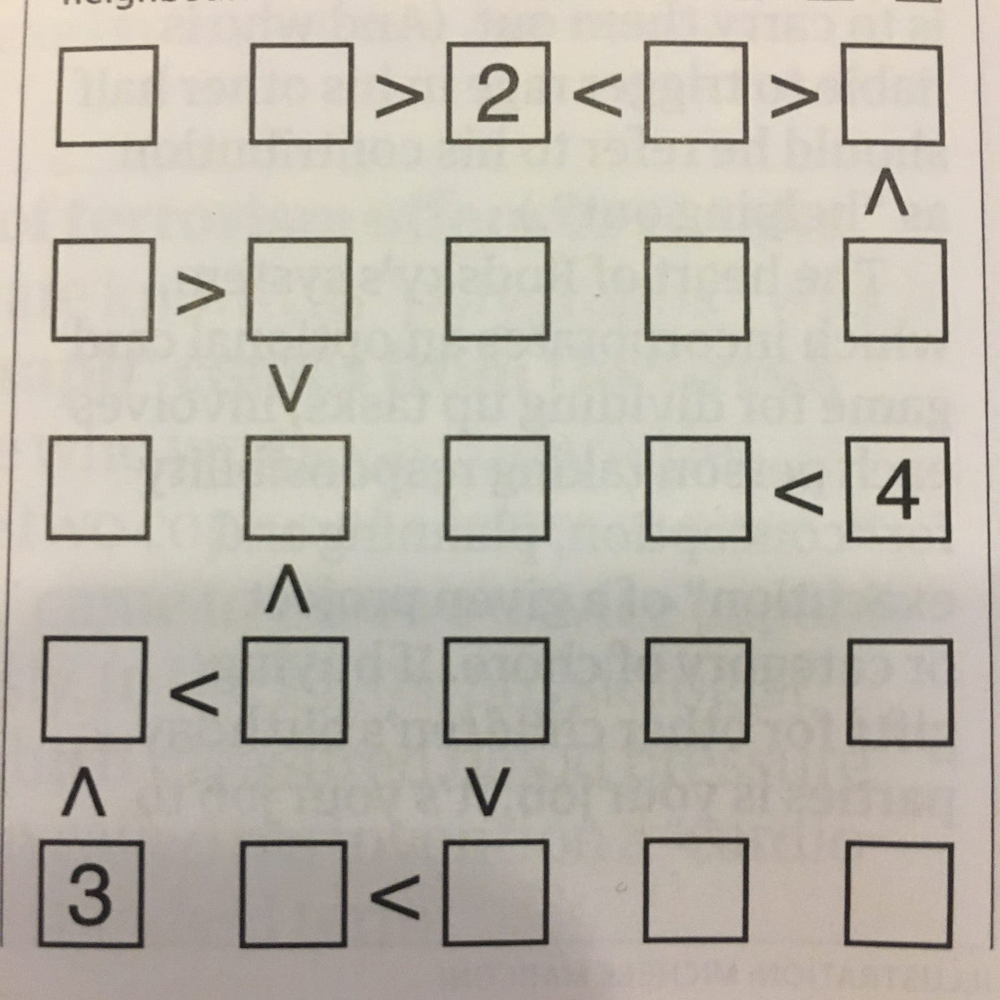
Futoshiki is a type of Japanese puzzle in the same vein as Sudoku — in so far as the aim is to completely fill a grid of boxes with numbers. The grid in this case is much smaller, typically 5 x 5 rather than 9 x 9, and includes additional inequality constraints between neighbouring numbers. A couple of years back my ideal Saturday morning routine would invariably include lazily solving one from the back of the Guardian. Simpler times.
Around this time I had also gotten into the world of data science, starting my first professional role. I knew solving the puzzle itself could be done fairly easily, but my knowledge of image processing was essentially zero. Would it be possible to feed a phone or webcam image into an algorithm that could find, process and solve the puzzle for me?
I’ve decided to start writing up some of the coding I do in my spare time, so this will be the first of a few posts on this topic. In this post, I’m going to give an overview of the first version of the end-to-end tool that I built to do just that.
Capturing the Puzzle
The most basic way I could think of doing this was to use a laptop webcam, allowing the captured image to be fed straight through to the rest of the algorithm locally. The function below opens up a capture window using OpenCV, showing your current webcam display, with a grid to guide capture. This allows us to crop the captured image with the grid, making life a whole lot easier down the line.
def capture_image(save_img: str=None) -> Union[np.ndarray, bool]:
"""Capture webcam image of a futoshiki puzzle using cv2 display, with a grid guide
:param save_img: path to write image to, defaults to None
:return: captured image
"""
cam = cv2.VideoCapture(0)
while True:
ret, frame = cam.read()
height, width = frame.shape[:2]
grid_length = 300
tl = (width // 2 - grid_length // 2, height // 2 - grid_length // 2) # top left
br = (width // 2 + grid_length // 2, height // 2 + grid_length // 2) # bottom right
output = frame.copy()
output = cv2.flip(output, -1)
cv2.rectangle(output, tl, br, (255, 0, 0), 2)
cv2.putText(output, 'Align puzzle with grid, then press SPACE BAR to capture image',
(10, 30), cv2.FONT_HERSHEY_SIMPLEX, 0.5, (0, 255, 0), 1)
cv2.imshow('Futoshiki Solver Capture', output)
if not ret:
break
k = cv2.waitKey(1)
if k % 256 == 27:
# ESC pressed
logger.info('Escape hit, closing window')
cv2.destroyAllWindows()
return False
elif k % 256 == 32:
# SPACE pressed
# crop image to frame size - format img[y:y+h, x:x+w]
frame = frame[tl[1]:tl[1]+grid_length, tl[0]:tl[0]+grid_length]
image = cv2.flip(frame, 0)
if save_img:
if not cv2.imwrite(save_img, image):
raise Exception('Couldn''t save image')
logger.info(f'{save_img} written')
cam.release()
return image Hitting ENTER will trigger a capture of the image, whilst ESC will cancel the capture process and close the window. I wrote some helper functions alongside this to preview the image. It helpfully flips the image around to make orienting the image for capture a bit easier!
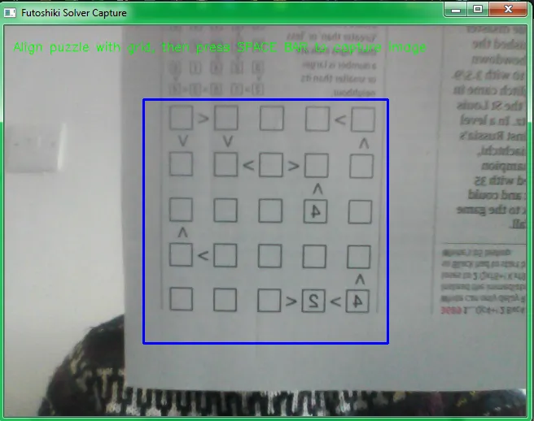
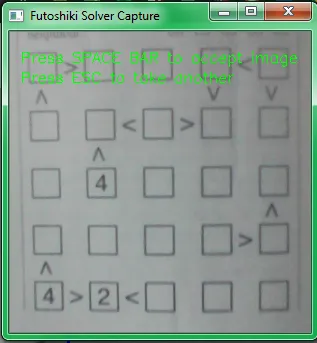
Extracting Puzzle Features
Once we have a cropped image of the puzzle we need to find a way of extracting each box and any inequalities in a repeatable, structured way. The puzzle can then be represented by a consistent data structure to pass to the solver. For this problem I took inspiration from a great article on retrieving boxes from images. I added some of my own tweaks to this.
One of the trickiest things I found was getting a decent binary image — this involves removing colour and any lighting gradient from the photo, leaving the image in clear black and white. This make the subsequent task of box detection much simpler.
To begin with I tried Otsu’s method. This makes a key assumption that an image has a bimodal distribution of pixel values, and tries to fit the threshold in between the two bimodal peaks. For images with a clear foreground / background separation this can work well. In my case, it makes a bit of a hash of more challenging images.
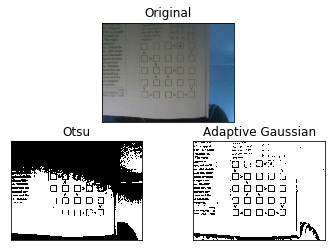
A more robust method I found was the Adaptive Gaussian Threshold. This deals effectively with variable lighting levels we are likely to encounter in a smartphone or webcam image. Essentially what this does is passes a kernel over the image. For each position of the kernel the threshold is calculated as the weighted sum of the pixel value and the kernel — otherwise known in deep learning as a convolution. The values of the kernel essentially look like a 3D Gaussian curve. As a final step, a constant is added which is useful for dealing with varying amounts of noise across the whole image.
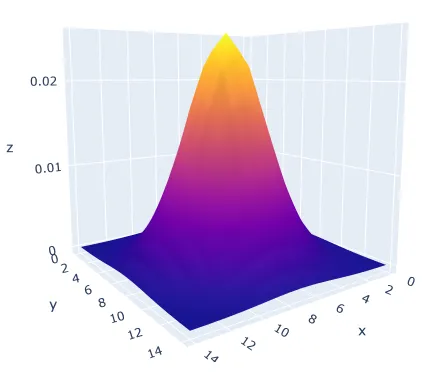
In general this can add quite a bit of noise to an image, but is crucial in addressing issues seen when using other methods of thresholding. As you’ll see we can strip out this noise fairly easily later on. I tried to automate the parameter selection, with varying success. The values below do well in most of the cases I’ve tried, but it’s possible there is a much better way of setting the constant.
# define a kernel size with odd side length to pass over the image
kernel_size = int(np.asarray(img.shape).max() * 0.10 // 1)
kernel_size = kernel_size if kernel_size % 2 != 0 else kernel_size + 1
# define a constant to subtract from the calculated mean
C = kernel_size // 10
img_bin = cv2.adaptiveThreshold(img, 255, cv2.ADAPTIVE_THRESH_GAUSSIAN_C,
cv2.THRESH_BINARY, kernel_size, C)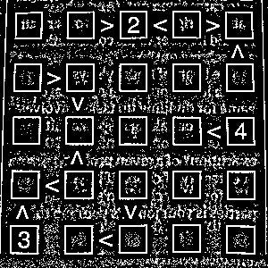
We can then apply horizontal and vertical kernels to the resulting image to extract line segments that are at 90 degrees to the image. Most of the noise can be removed by applying erosion followed by dilation to each image. This is commonly known as “opening”, and works well for removing smaller clusters of pixels whilst retaining larger features in images.
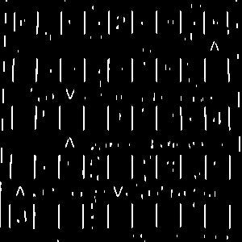
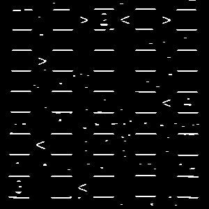
These two images can then be recombined linearly, with some optional extra “opening” if desired.
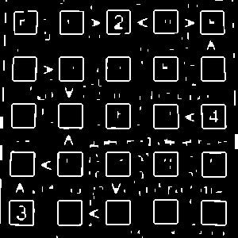
Contours can then be extracted from this final image, using the code below. A contour is defined as any continuous curve or line with the same pixel intensity. I then subsetted these obtained shapes to only look for bounding boxes of the desired size, relative to the image.
# find contours, not returning any contours inside outer ones
contours, _ = cv2.findContours(img_final_bin, cv2.RETR_EXTERNAL, cv2.CHAIN_APPROX_SIMPLE)
# sort by left-to-right, top-to-bottom using the bounding rectangles of contours
contours = sorted(contours,
key=lambda ctr: cv2.boundingRect(ctr)[0] +
cv2.boundingRect(ctr)[1] * img_final_bin.shape[1] // 20)
# define min and max box sizes
box_low = 0.05 * img.shape[0]
box_high = 0.25 * img.shape[0]
for c in tqdm(contours):
x, y, w, h = cv2.boundingRect(c)
if (box_low < w < box_high and box_low < h < box_high):
# do further processingThe contours are also ordered by their x and y coordinates, as shown by the red boxes. This ordering lets us apply consistent logic to certain boxes to capture neighbouring inequalities — denoted by green and blue boxes.
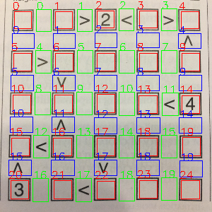
Optical Character Recognition (OCR)
Tesseract is an open source tool actively developed by Google for optical character recognition. I picked this as an easy off the shelf option, although it is quite fiddly to get it working, and doesn’t always produce great results. In theory you can use Tesseract to extract characters from an entire document, with the tool using it’s own internal image segmentation to achieve this.
I used pytesseract as a simple python wrapper for the Tesseract library. The code below scans an input image of a single character, and prints the output.
def scan_image(path):
pytesseract.pytesseract.tesseract_cmd = r'C:\Program Files\Tesseract-OCR\tesseract.exe'
img = cv2.imread(path)
val = pytesseract.image_to_string(img, config='--psm 10') # psm 10 = single character mode
print('Character is:', val)On my to do list is creating a MNIST type deep learning model to do this myself, as this problem is far narrower than the one Tesseract was designed to solve.
Solving the Puzzle
Google OR-Tools is a great library for solving combinatorial optimisation problems of various formats. Professionally I’ve used most often to build and solve vehicle routing models for supply chain planning.
Here I used a much simpler version of it for constraint programming, which is achieved by using a search process which includes propagation and backtracking. Google’s own documentation explains these concepts quite generally:
- Propagation — Each time the solver assigns a value to a variable, the constraints add restrictions on the possible values of the unassigned variables. These restrictions propagate to future variable assignments. Propagation can speed up the search significantly by reducing the set of variable values the solver must explore.
- Backtracking — occurs when either the solver can’t assign a value to the next variable, due to the constraints, or it finds a solution. In either case, the solver backtracks to a previous stage and changes the value of the variable at that stage to a value that hasn’t already been tried.
How does this apply to a Futoshiki? The below example of a single row captures it fairly well.
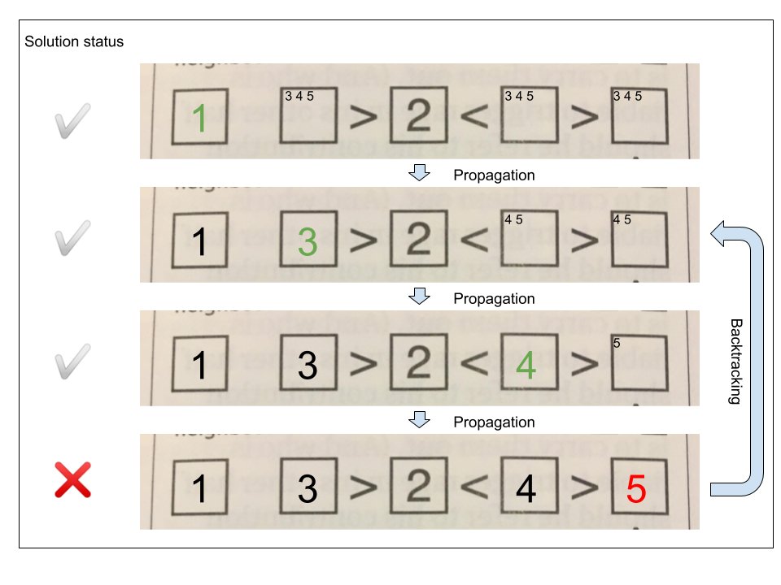
The algorithm tries different numbers in each position, until no valid number can be placed in a particular square — in this case because 4 is not greater than 5. As each number is placed, constraints are added to that row and column so that the number cannot occur anywhere else within them. In this example, the algorithm backtracks to a previous state and tries different solutions that are not prohibited by the constraints at that earlier state.
Once solved, a callback passed into the solver function allows us to print solutions in a nice format.
The Final Result
The whole process currently achieves good results with a sample image that is much less noisy than those taken on my awful laptop webcam. I’m hoping to get it to work end to end with any input image soon, once I’ve learned some more image processing hacks!
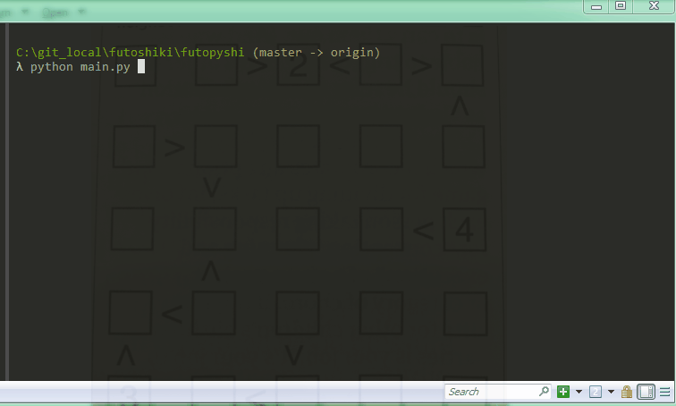
The version of the source code referenced in this post is available on github